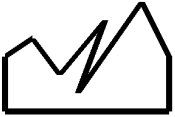

IDL 8.2 adds complex functionality to IDL Graphics, provides a new look and new features to Widget programming, and simplified building of custom tools for ENVI. Other improvements include streamlined project builds and new fonts for Unicode math symbols.
Note: If you are new to IDL or upgrading from an older version, see also: What's New in IDL 8.0 and What's New in IDL 8.1
IDL 8.2 now draws higher-quality thick lines. This change affects lines with a thickness greater than one pixel, drawing clean joins at corners and intersections. This technology also draws curved and spiral lines smoothly and with enhanced detail. The following examples illustrate the improvements:
|
Previous versions |
IDL 8.2 |
Changes |
|---|---|---|
|
 |
|
Lines join cleanly at the corners. Angles that join at less than 45 degrees are beveled, and those greater than 45 degrees are pointed. |
|
|
|
Line thickness is consistent and the center displays at a higher resolution. |
|
|
|
Line thickness is consistent and the center is round. Line ends are always perpendicular to the line. |
Note: The new line-drawing functionality may result in slower performance for thick lines. See the LINE_QUALITY property of the graphics objects classes IDLgrBuffer , IDLgrClipboard , IDLgrPDF , IDLgrPrinter , and IDLgrWindow .
Previously, with the ARROW function, you could draw only one arrow at a time. Now, the ARROW function accepts arrays for the start and end points, and also for the COLOR, FILL_COLOR, HEAD_SIZE and THICK properties. This allows you to create an unlimited number of arrows with a single call. For examples see the ARROW function.
A new COORD_TRANSFORM property for the AXIS function lets you define a linear transform between the graphic's data units and the axis units. For example, if you have a plot in degrees Celsius, you can add an axis in degrees Fahrenheit, with appropriate tick marks and tick labels. The AXIS_RANGE property lets you restrict the axis range to only a portion of the full dataspace range. The DATA property lets you pin an axis to a data position, so that panning or zooming the data will cause the axis to move with the data. See Axes for an example.
In addition to custom ranges, you can now rotate the tick mark labels on axes with the [XYZ]TEXT_ORIENTATION property.
Previously, with the SYMBOL function, you could draw only one symbol at a time. Now, the SYMBOL function accepts arrays for the symbol locations, and also for the LABEL_STRING, SYM_COLOR, and SYM_TEXT properties. This allows you to create an unlimited number of symbols with a single call. For examples see the SYMBOL function.
New BACKGROUND_COLOR and BACKGROUND_TRANSPARENCY properties have been added to the graphics functions. For example, setting the BACKGROUND_COLOR property on the PLOT function will change the background of the region containing the plot. Setting the background color of a 3D graphic (such as a SURFACE ) will add in "walls" of that color that sit behind the graphic. Setting the background color on the WINDOW will change the background of the entire window. For graphics, the BACKGROUND_TRANSPARENCY can be used to change the opacity of the background color. For example:
p = PLOT3D(/TEST, BACKGROUND_COLOR='lemon chiffon', $
AXIS_STYLE=2, DEPTH_CUE=[0,1])
p.window.BACKGROUND_COLOR = 'lavender'
A new ::Erase method has been added to the graphics window object. The Erase method clears out the contents of the window, but does not close the window. This allows you to create new graphics within an existing window, and without the overhead of recreating the window. An optional COLOR keyword lets you change the background color after the erase. For details see the WINDOW function.
A new CLIP property has been added to all graphics functions. The default is CLIP=1, which causes the graphics object to be clipped when it extends outside of the dataspace range. If you set CLIP=0 then no clipping will occur. This property is ignored for objects that are in the annotation layer instead of in the dataspace.
A new TrueType font has been added to the IDL distribution. The DejaVuSans font contains numerous Unicode mathematical symbols, which are available either through their Unicode numbers or as TeX commands via the TEXT function:
This font is now available for Direct Graphics, Object Graphics, and the Graphics functions. The Embedded Formatting Commands have been changed so that !10 now selects this font instead of the Symbol font. For examples of the new characters see SHOWFONT and the TEXT function.
A new LABEL_FORMAT property has been added to the MAPGRID function. The label format can be set to an IDL function name, and allows you to create custom labels for the longitude and latitude grid lines on a map.
The LATITUDES and LONGITUDES properties allow you to retrieve the MAPGRIDLINE child objects from the MAPGRID object. You can then control all of the display properties for each individual grid line.
For details see the MAPGRID function.

The COLORBAR function now supports discrete colorbars for use with the CONTOUR function. When you create a Colorbar from a Contour plot, the colorbar will automatically have discrete color boxes, one for each contour level. In addition, the COLORBAR function has the following new properties: RANGE, RGB_TABLE, TAPER, and TEXT_ORIENTATION. Together with the existing TICKNAME property, you can define your own custom colorbars (either continuous or discrete).
As an example of discrete colorbars with contour plots:
file = FILEPATH('convec.dat', $
SUBDIR=['examples', 'data'])
z = READ_BINARY(file,DATA_DIMS=[248,248])
index = [0,30,60,90,120,150,220]
c1 = CONTOUR(z, /FILL, ASPECT_RATIO=1, DIM=[300,500], $
RGB_TABLE=39, RGB_INDICES=index, C_VALUE=index, $
LAYOUT=[1,2,1], AXIS_STYLE=0, MARGIN=0)
; Create a discrete colorbar with vertical orientation.
; The ends are automatically tapered for a filled contour.
cb = COLORBAR(TARGET=c1, TITLE='Convection', /BORDER, $
ORIENTATION=1, TEXTPOS=1, POSITION=[0.8,0.55,0.85,0.95])
c2 = CONTOUR(z, C_THICK=2, ASPECT_RATIO=1, /CURRENT, $
RGB_TABLE=39, RGB_INDICES=index, C_VALUE=index, $
LAYOUT=[1,2,2], AXIS_STYLE=0, MARGIN=0)
; Create a discrete colorbar with vertical orientation.
; Labels are centered on the colors for a line contour.
cb = COLORBAR(TARGET=c2, TITLE='Convection', /BORDER, $
ORIENTATION=1, TEXTPOS=1, POSITION=[0.8,0.05,0.85,0.45])

The LEGEND function now allows you to add a legend to a VECTOR plot. In addition, you can now retrieve the individual legend items and set properties on those objects, including the legend label, the sample vector magnitude (for vector plots), the sample line length (for line plots), and the text color. For example:
; Set up the map projection, grid, and continents.
m = Map('Equirectangular', LIMIT=[0,-150,60,-45], $
LABEL_POSITION=0, COLOR='light gray', LABEL_COLOR='black')
m1 = MapContinents(FILL_COLOR='light gray')
; Read the wind data, create a vector plot
RESTORE, FILEPATH('globalwinds.dat', SUBDIR=['examples','data'])
v = Vector(u, v, x, y, /OVERPLOT, LENGTH_SCALE=2)
; Add the legend
l = Legend(SAMPLE_MAGNITUDE=10, UNITS='$m s^{-1}$', $
POSITION=m.MapForward(-45,61), /DATA, $
VERTICAL_ALIGNMENT='bottom')
For details see the LEGEND function.
The IDL 8.2 Help system provides a new section on Image Analysis , as well as new examples of how to use filtering and other features that were traditionally used in Direct and Object Graphics.
Widgets on Microsoft Windows oplatforms have a more modern appearance, using rounded edges for bitmap buttons.
Widgets can now use 32-bit (RGBA) images for bitmap buttons. See WIDGET_BUTTON and WIDGET_TREE for complete information.
Checkboxes have been added to tree widgets in this release. The checkbox functionality is accessed via the "checkbox" family of keywords. The tree widget must have checkboxes enabled in order for the nodes to have checkboxes. This can be set only at creation and cannot be controlled later. However, the state of each node can be set at any time, either programmatically or by the user clicking on a checkbox. Leaf nodes can have values of 0 (unchecked) or 1 (checked). Folder nodes can have values of 0 (unchecked), 1 (checked) or 2 (mixed). The "mixed" state is intended for folder nodes that have at least one but not all child nodes either checked or mixed. See WIDGET_TREE for more information.
The SENSITIVE keyword to WIDGET_TREE now allows you to set the sensitivity of an entire tree or just individual nodes.
On Windows, the REDRAW keyword allows you to disable or enable widget updates for a widget and its children. This keyword differs from the UPDATE keyword, because REDRAW affects only the widget and its children. In addition, whenever REDRAW is set to 1, the specified widget and its children are immediately redrawn. On Unix, using this keyword is equivalent to using the UPDATE keyword. See WIDGET_CONTROL for more information.
The SENSITIVE keyword to WIDGET_CONTROL now dynamically updates node sensitivity.
The IDL Workbench now automatically checks for duplicate routine names and displays a warning icon at the relevant code line, and in the Problems View. There is also a preference setting that allows you to control this behavior.
The Project build properties have been streamlined. The difference between Default and Custom builds has been removed, and several of the options have been simplified. For details, see IDL Build Properties .
You can build custom ENVI tools using the IDL Workbench. Use the ENVI Extension Wizard to build tools that appear in the ENVI Toolbox.
In the IDL Workbench, you can now use <Ctrl>+ and <Ctrl>– to increase or decrease the font size in the Editor and the IDL Console.
The IDL Workbench now provides support for the Eclipse dropins folder. The dropins folder is located within the system-specific bin directory of your IDL installation. New plugins can be dropped into this folder to provide additional functionality for the IDL Workbench. For details see the README file within the dropins folder.
The documentation that is provided in PDF is now listed in the Help Contents under Additional Topics .
The ISA function now has a NULL keyword, that returns 1 (TRUE) if the input variable is equal to !NULL , and 0 (FALSE) otherwise. This keyword allows you to distinguish between undefined variables and !NULL variables.
The IDL_Container::Get method now has a NULL keyword. If this keyword is set, and no objects will be returned, then !NULL is returned instead of -1. In addition, the IDL_Container::Remove method has been enhanced so that it now quietly returns if !NULL is passed in. With these changes, you can now remove all objects of a certain type from the container without having to do any error checking. For example:
obj->Remove, obj->Get(/ALL, ISA='MyClass', /NULL)
IDL now supports reading and writing TIFF files larger than 4 GB on all platforms, including 32-bit systems. There are no API changes--if you create a TIFF file larger than 4 GB, IDL automatically creates a file with the correct BigTIFF header.
For detailed information on how to use IDLffVideoWrite, see the new help section Creating Video.
The new JSON_PARSE and JSON_SERIALIZE functions allow you to convert files or IDL variables into JSON strings, and vice versa. JSON (JavaScript Object Notation) is a lightweight data-interchange format, that is designed to be easy for humans to read and write, and for machines to parse and generate. Details on the JSON format can be found at http://www.json.org .
The List::FindValue and Hash::FindValue methods have been renamed to List::Where and Hash::Where , for better consistency with the rest of IDL. The FindValue methods will still work, but are no longer documented and should not be used in new code.
If you are new to IDL or upgrading from an older version, see also: What's New in IDL 8.0 and What's New in IDL 8.1 .